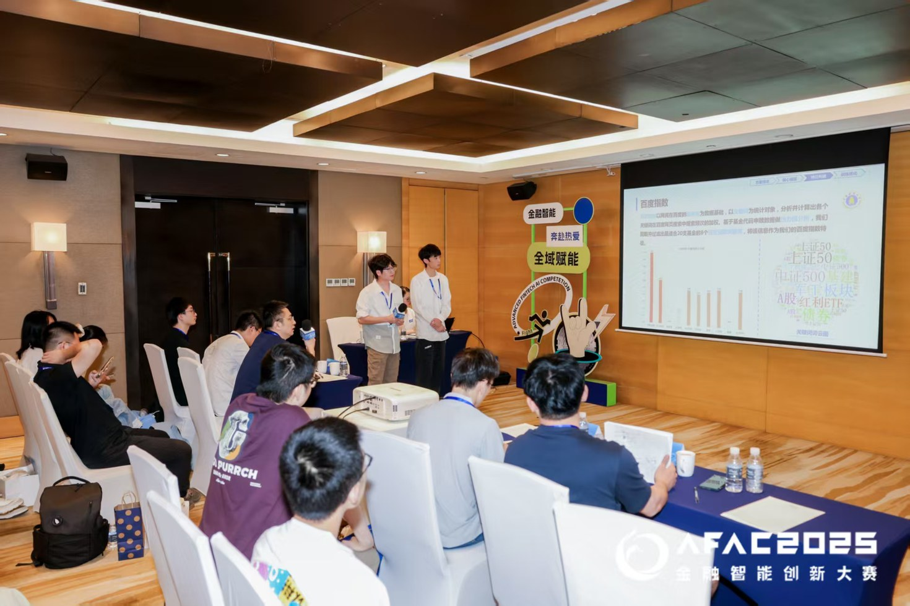
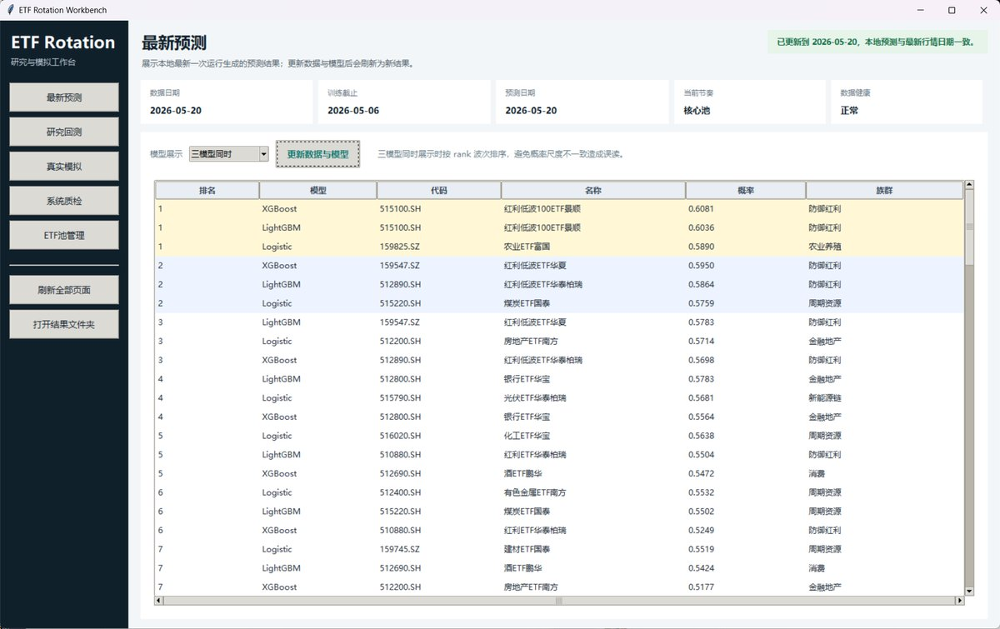

Portfolio Overview
项目作品集
本项目集为计算机视觉、计算成像、金融智能、RAG 应用和微信小程序方向的代表项目。
Computer VisionComputational ImagingFinancial AIRAG / AgentMini Program
代表项目
以项目目标、关键做法和可视化成果为主线组织，首页保留静态展示，详细页展开完整材料。


Portfolio Overview
本项目集为计算机视觉、计算成像、金融智能、RAG 应用和微信小程序方向的代表项目。
以项目目标、关键做法和可视化成果为主线组织，首页保留静态展示，详细页展开完整材料。